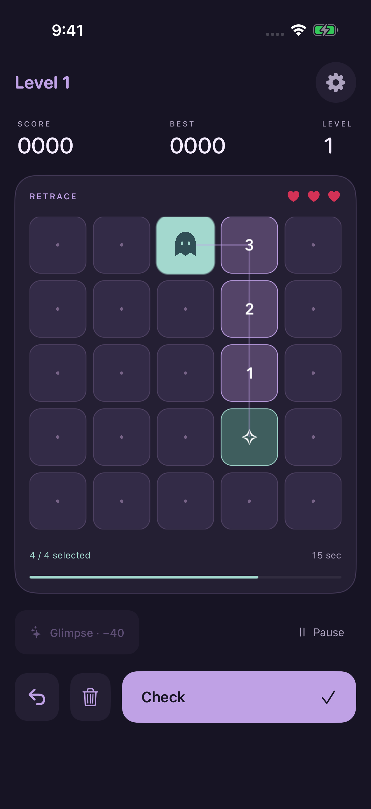

Catch a little light.
A numbered trail appears one tile at a time. Notice the shape, the corners, and the order before it slips away.
A memory game for iPhone
A little ghost. A trail of light. Watch the path appear, hold its shape in your mind, and find your way back after it fades.
Follow the lightENDLESS TRAILS. THREE HEARTS. ONE MORE TRY.

The art of finding your way
Simple enough to begin in a moment. Just enough challenge to make the next journey feel worth taking.
A numbered trail appears one tile at a time. Notice the shape, the corners, and the order before it slips away.
Start at the mint tile and tap each next step. Move up, down, left, or right. Build the full route, then tap Check. Undo or clear to edit before submitting.
Spend 40 earned points for a second glimpse. Your timer pauses while you look. Submit correct routes to keep climbing through harder levels.
A moment to yourself
Longer paths give your memory a little more to hold. Correct submissions and quick recall grow your score, while every new journey draws a different route.
No account, no ads, no analytics. Just you and the next turn.
The whole game works offline. Your best score stays on your iPhone.
Gentle sound, optional haptics, and small bursts of light make each remembered step feel good.
Sound respects Silent Mode. Reduce effects for a calmer screen.
Leave the app and the journey pauses. Return when you’re ready, then tap to resume.